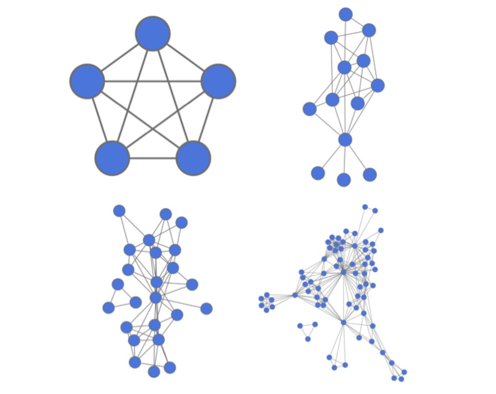
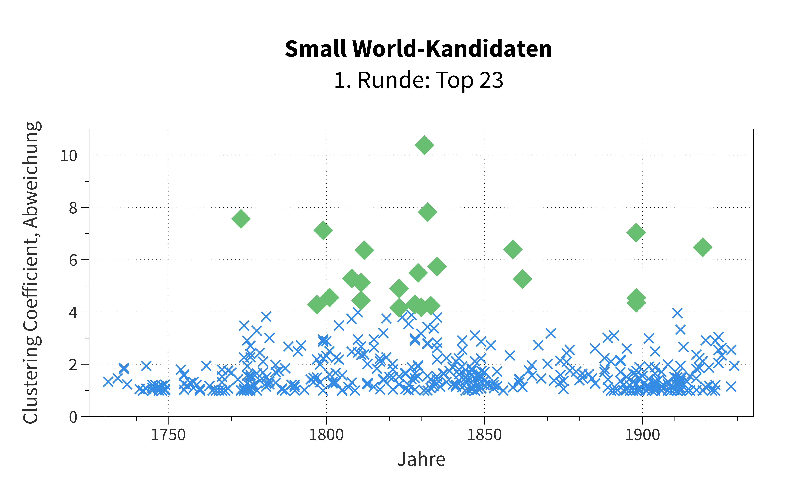
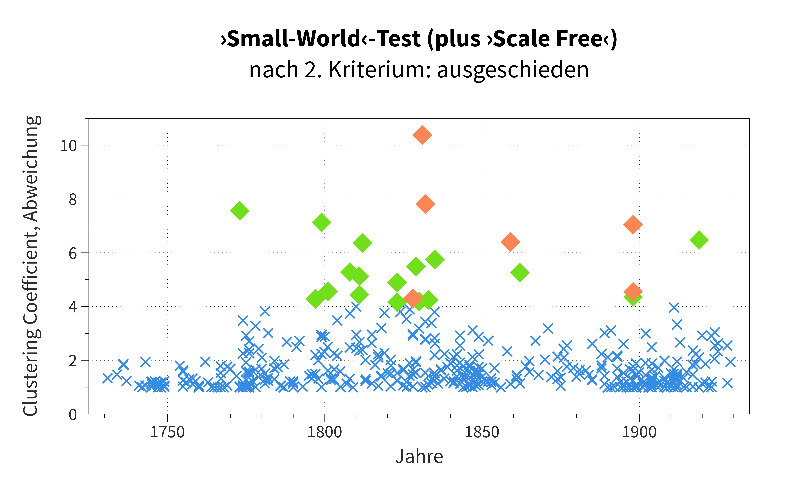
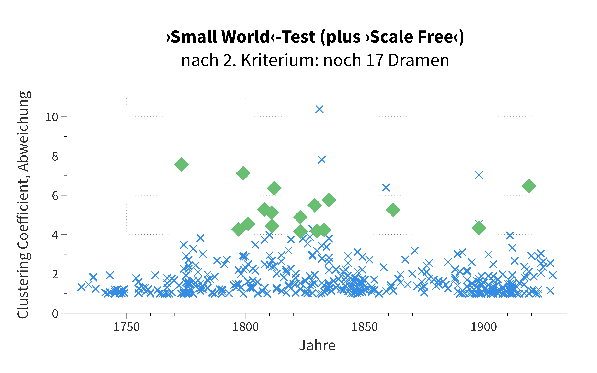
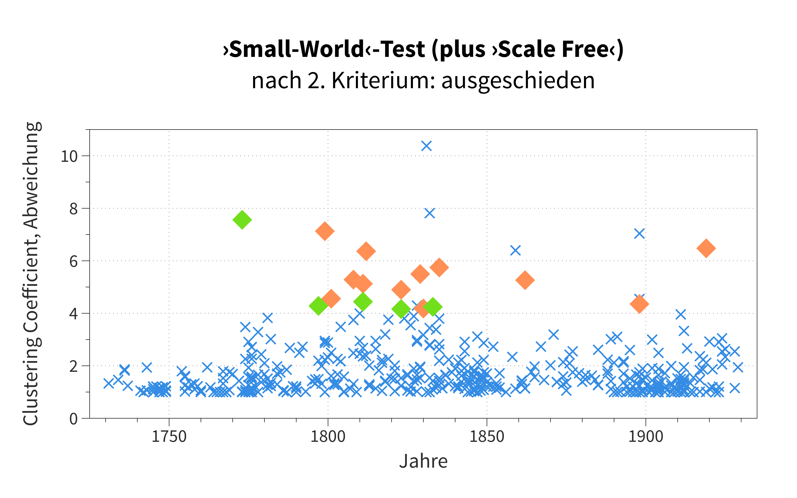
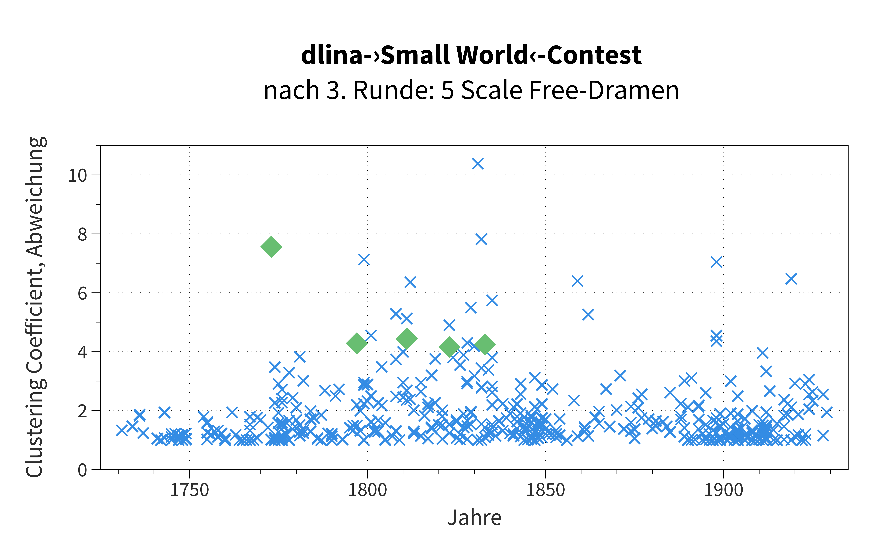
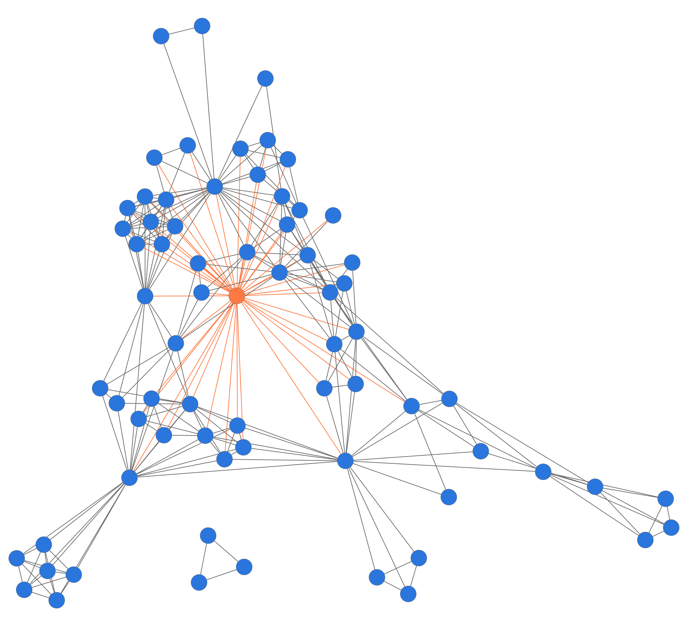
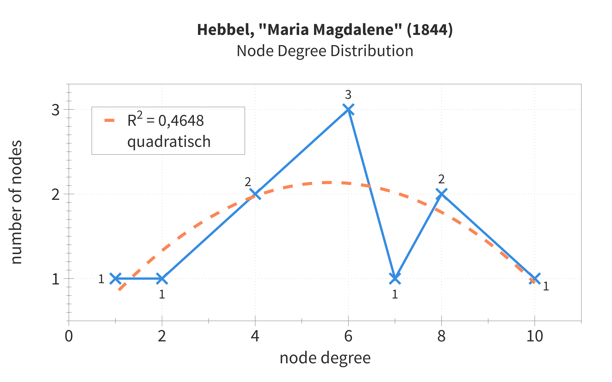
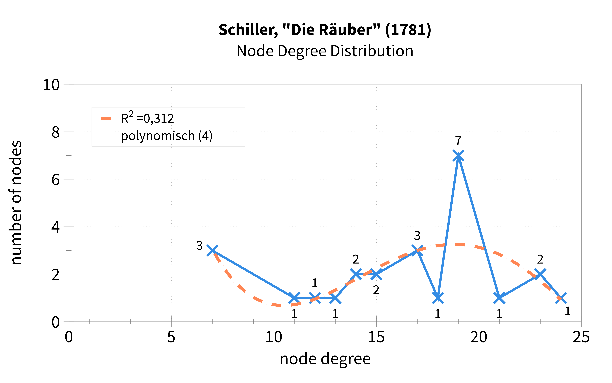

Dramen als ›Small Worlds‹?
Netzwerkdaten zur Geschichte und Typologie deutschsprachiger Dramen 1730-1930
Peer Trilcke¹, Frank Fischer², Mathias Göbel², Dario Kampkaspar³, Christopher Kittel⁴
- Seminar für Deutsche Philologie, Univ. Göttingen
- Staats- und Universitätsbibliothek Göttingen
- Herzog August Bibliothek Wolfenbüttel
- Karl-Franzens-Universität Graz
Präsentation: http://lina.digital/presentations/2016-leipzig/
Leipzig, »DHd 2016«, 10.3.2016
Präsentation lizenziert unter CC-BY 4.0.
Gliederung
- Einleitung
- Dramen als ›Small Worlds‹? Idee
- Dramen als ›Small Worlds‹? Studie
- Ausblick
1. Einleitung
Die dlina-Arbeitsgruppe
- dlina = digital literary network analysis
- interinstitutionelle Arbeitsgruppe aus Literaturwissenschaftlern und Informatikern
- Mitglieder: Frank Fischer, Dario Kampkaspar, Christopher Kittel, Mathias Göbel, Hanna-Lena Meiners, Peer Trilcke, Andreas Vogel
- Dokumentation …
Die dlina-Arbeitsgruppe
- Ziel: philologisch kuratierte Extraktion, Analyse und Interpretation von Netzwerkdaten aus dramatischen Texten
- Informationen zum Prozess der Extraktion und Analyse der Netzwerkdaten
- Vortrag »Digital Network Analysis of Dramatic Texts« (DH2015, Sydney), Slides und Skript
- Blogposts zum dlina-Format, zu den Editionsregeln und zu dramavis
Was verstehen wir (derzeit) unter Netzwerkdaten?
- Netzwerkdaten = Interaktionen zwischen Figuren
- Operationalisierung von ›Interaktion‹
- Wenn zwei Figuren innerhalb eines vorgegebenen Segments (Szene/Auftritt; Akt/Aufzug) des Dramas jeweils einen Sprechakt vollziehen, dann interagieren sie miteinander.
Derzeitiges Arbeitskorpus
»dlina Corpus 15.07«
- entstanden auf Basis des TextGrid Repository
- umfasst 465 deutschsprachige Dramen (1731 bis 1929)
- zur Zusammensetzung siehe den Blogpost Introducing »dlina Corpus 15.07«
Fokus heute:
Wie interpretiert man die gewonnenen Daten?
2. Dramen als ›Small Worlds‹?
Idee
Herausforderung:
Heterogenität der Dramen-Netzwerke

Interpretationsszenarien
z.B.
| Historische Entwicklungen | Typologische Differenzierungen |
 |
 |
| Siehe z.B. den Blogpost 200 Years of Literary Network Data | Laufende Forschungen: Typen von Dramen-Netzwerken |
Typen von Dramen-Netzwerken
Literaturtheoretische Hintergrund-Hypothesen
- Dramen als kontextsensible ästhetische Modelle sozialer Formationen, d.h. …
- … Dramen stellen soziale Formationen dar (z.B. Kleinfamilie, Königshof, ›Gesellschaft‹);
- … diese sozialen Formationen bestehen nur in der ästhetischen Darstellung, als Modelle;
- … diese Modelle sind (zumindest potenziell) kontextsensibel, stehen also in Wechselwirkung mit realen sozialen Formationen.
Typen von Dramen-Netzwerken:
›Small World‹-Idee
Ansatz: Bezug auf netzwerkanalytische Typologie
- Netzwerktyp der ›Small World‹ (zuerst bei Watts & Strogatz 1998; cf. Watts 2004);
- »widespread in biological, social and man-made systems« (Watts & Strogatz 1998, 442)
- »highly clustered, like regular lattices, yet have small characteristic path lengths, like random graphs« (Watts & Strogatz 1998, 440)
- Vorläufer in der Anwendung auf Dramen (hier: Shakespeare): Stiller, Nettle & Dunbar 2003; Stiller & Hudson 2005
- im Folgenden: Anwendung auf die automatisiert (zugleich philologisch kuratiert) extrahierten Netzwerkdaten des dlina-Korpus
Typen von Dramen-Netzwerken:
›Small World‹-Idee
Relationale Bestimmung von ›Small Worlds‹
| Regular | ›Small World‹ | Random |
 |
 |
 |
| Clustering Coefficient (C) | ||
| 0,600 | 0,852 | 0,131 |
| Average Path Length (APL) | ||
| 6,261 | 2,346 | 2,258 |
Typen von Dramen-Netzwerken:
›Small World‹-Idee
Definition von ›Small World‹-Netzwerken
- 1. Kriterium: Clustering Coefficient (C) des beobachteten Netzwerks ist signifikant höher als der C eines entsprechenden Random-Netzwerks
- 2. Kriterium: Average Path Length (APL) des beobachteten Netzwerks weicht nicht signfikant ab von der APL eines entsprechenden Random-Netzwerks
Typen von Dramen-Netzwerken:
›Small World‹-Idee
Zusatzkriterium: ›Scale Free‹
- ›Scale Free‹-Netzwerke als Variante von ›Small World‹-Netzwerken (beschrieben von Albert & Barabási 2002);
- weisen zusätzlich eine Node Degree Distribution mit Power Law auf
Typen von Dramen-Netzwerken:
›Small World‹-Idee
Kriterien (Indikatoren) im Überblick
- 1. Kriterium: Clustering Coefficient (C) des beobachteten Netzwerks ist signifikant höher als der C eines entsprechenden Random-Netzwerks
- 2. Kriterium: Average Path Length (APL) des beobachteten Netzwerks weicht nicht signfikant ab von der APL eines entsprechenden Random-Netzwerks
- 3. Kriterium (Scale Free): Die Node Degree Distribution lässt sich am besten mit einer Power Law-Regression beschreiben
3. Dramen als ›Small Worlds‹?
Studie
1. Kriterium: Clustering Coefficient
- Der Clustering Coefficient (C) des beobachteten Netzwerks ist signifikant höher als der C eines entsprechenden Random-Netzwerks
- Vorgehen
- Berechnung von 1000 Randomnetzwerke zu jedem einzelnen Dramen-Netzwerk
- Berechnung des Mittelwerts für die Randomnetzwerke -> Clustering Coefficient (C Random)
- Bildung des Quotienten aus C und C Random -> Clustering Coefficient Abweichung (C Abw)
- Identifizierung der Dramen mit einem signifikant höheren C Abw (signifikant höher = größer als Mean+2*SD)
1. Kriterium: Clustering Coefficient
2. Kriterium: Average Path Length
- Die Average Path Length (APL) des beobachteten Netzwerks weicht nicht signfikant ab von der APL eines entsprechenden Random-Netzwerks
- Vorgehen
- Berechnung von 1000 Randomnetzwerke zu jedem einzelnen Dramen-Netzwerk
- Berechnung des Mittelwerts für die Randomnetzwerke -> Average Path Length (APL Random)
- Bildung des Quotienten aus APL und APL Random -> Average Path Length Abweichung (APL Abw)
- Aussortierung der Dramen, die Kriterium 1 erfüllen, aber bei ABL Abw signifikant abweichen (kleiner als Mean-2*SD bzw. größer als Mean+2*SD)
2. Kriterium: Average Path Length
2. Kriterium: Average Path Length
Zwischenstand
übrig nach Kriterium 1 & 2
| Titel | Autor | Jahr |
|---|---|---|
| Götz | Goethe | 1773 |
| Doktor Faust | Soden | 1797 |
| Prinz Zerbino | Tieck | 1799 |
| Die Jungfrau von Orleans | Schiller | 1801 |
| Die Hermannsschlacht | Kleist | 1808 |
| Halle | Arnim | 1811 |
| Jerusalem | Arnim | 1811 |
| Der Eheteufel | Gleich | 1812 |
| Faust | Voß | 1823 |
| Der Barometermacher | Raimund | 1823 |
| Die unheilbringende Zauberkrone | Raimund | 1829 |
| Die Walpurgisnacht | Birch-Pfeiffer | 1830 |
| Der böse Geist | Nestroy | 1833 |
| Andreas Hofer | Immermann | 1835 |
| Faust | Vischer | 1862 |
| Nero | Panizza | 1898 |
| Faust | Avenarius | 1919 |
3. Kriterium: Power Law Distribution
- Die Node Degree Distribution lässt sich am besten mit einer Power Law-Regression beschreiben
- Vorgehen
- Mapping der Node Degree Distribution
- Berechnung der Bestimmtheitsmaße (R²) für diverse Regressionen (linear, quadratisch, exponentiell, logarithmisch, Power Law)
- Aussortierung aller Dramen, die Kriterium 1 & 2 erfüllen, aber keine Power Law-Regression aufweisen
3. Kriterium: Power Law Distribution
3. Kriterium: Power Law Distribution
›Small-World‹-Test (plus ›Scale Free‹)
Endergebnis
(übrig nach Kriterien 1, 2 & 3)
| Titel | Autor | Jahr |
|---|---|---|
| Götz | Goethe | 1773 |
| Doktor Faust | Soden | 1797 |
| Jerusalem | Arnim | 1811 |
| Der Barometermacher | Raimund | 1823 |
| Der böse Geist | Nestroy | 1833 |
Diskussion
Drei Fragen (von vielen)
- 1. Was heißt eigentlich: Dramen als ›Small Worlds‹?
- 2. Wenn ›Small World‹-Dramen die seltene ›Abweichung‹ sind: Was ist dann die ›Norm‹?
- 3. Gibt es neben ›Small World‹-Dramen weitere ›Abweichungen‹?
1. Was heißt ›Dramen als Small Worlds‹?
1. Was heißt ›Dramen als Small Worlds‹?
|  |  |
Zentrale Figur(en) plus Cliquenbildung
hier am Bsp. von Goethe, "Götz"
1. Was heißt ›Dramen als Small Worlds‹?
| Arnim, "Jerusalem" | Raimund, "Der Barometermacher" |
 |
 |
 |
 |
| Soden, "Doktor Faustus" | Nestory, "Der böse Geist" |
2. Was ist die ›Norm‹?
2. Was ist die ›Norm‹?
›Abweichung‹: u.a. Power Law z.B. in "Götz"

viele ›untere‹ Figuren - wenig ›mittlere‹ Figuren - sehr wenig ›obere‹ Figuren
2. Was ist die ›Norm‹?
In der Regel (›Norm‹) jedoch andere Verteilungen
|  |  |
| viele ›mittlere‹ Figuren | |
3. Weitere Abweichungen?
3. Weitere Abweichungen?
Z.B.: Die ›umgekehrte‹ Power Law-Regression

3. Weitere Abweichungen?
| Goethe, "Götz" Drama des ›großen Individuums‹ |
Mühsam, "Judas" Drama des ›Kollektivs‹ |
 |
 |
| aristokratisches Modell? | kommunistisches Modell? |
4. Ausblick
Ausblick I
- Interpretation
- weitere und tiefere Erschließung der bereits vorliegenden Daten (u.a. auch figurenbezogene Zentralitätswerte)
- Optimierung des Extraktions- und Analyse-Workflows (›dlina-Pipeline‹)
- vollständige Implementierung der Python-Pipeline (»dramavis«): Input einer TEI-Datei -> Output von Werten/Diagrammen/Graphen
- Integration des Social Editing-Tools »plays« in den Workflow
- GUI
Ausblick II
- Granulierung der Netzwerkdaten
- Spezifierung des Interaktionsbegriffs, u.a. differenziertere Erfassung von Konfigurationen (Figuren auf/ab) notwendig für philologisch exaktere Analysen und Interpretationen
- Anreicherung der Interaktions- und Figurendaten
- quantitative Figurenattribute (z.B. wie viel spricht eine Figur?) -> Daten werden teilweise bereits erhoben
- quantitative Interaktionsattribute (z.B. wie häufig wird interagiert?) -> Daten werden teilweise bereits erhoben
- qualitative Figurenattribute (z.B. Geschlecht) -> Erhebung über »play(s)« ist vorgesehen
- qualitative Interaktionsattribute (z.B. Verwandschaft) -> geplant
Ausblick III
- Verbesserung der Analysegrundlage
- Korpusoptimierung als Voraussetzung für umfassendere und philologisch belastbarere Analysen
- derzeit läuft: gemeinsamer DFG-Antrag mit dem Deutschen Textarchiv / BBAW
Weiterer Vortrag auf DHd 2016
| Do. 10.3. 11.00-12.30 |
Play(s): Crowdbasierte Anreicherung eines literarischen Volltext-Korpus |
Göbel, Meiners |
Infos und Updates
Präsentation: http://lina.digital/presentations/2016-berlin/
Blog: https://dlina.github.io/
dlina auf Github: https://github.com/dlina
dramavis auf Github: https://github.com/lehkost/dramavis
play(s) auf Github: https://github.com/mathias-goebel/mobile-plays
- Twitter:
- #dlina
- Frank Fischer (@umblaetterer)
- Mathias Göbel (@goebel_m)
- Christopher Kittel (@chris_kittel)
- Peer Trilcke (@peertrilcke)
Literatur
- Réka Albert & Albert-László Barabási: Statistical Mechanics of Complex Networks, in: Reviews of Modern Physics 74 (2002), 47–97.
- Albert Lászlo Barabási & Bonabeau, Eric: Scale Free Networks, in: Scientific American 288 (2003) 50–59.
- Frank Fischer, Mathias Göbel, Dario Kampkaspar & Peer Trilcke: [Blog] Network Analysis of Dramatic Texts, URL: https://dlina.github.io/
- Franco Moretti: Network Theory, Plot Analysis, in: Stanford Literary Lab Pamphlets, No. 2 (May 1st, 2011).
- James Stiller, Daniel Nettle & Robin I. M. Dunbar: The Small World of Shakespeareʼs Plays, in: Human Nature 14 (2003), 397–408.
- James Stiller & Matthew Hudson, Weak Links and Scene Cliques Within the Small World of Shakespeare, in: Journal of Cultural and Evolutionary Psychology 3 (2005), 57–73.
- Peer Trilcke: Social Network Analysis (SNA) als Methode einer textempirischen Literaturwissenschaft, in: Philip Ajouri, Katja Mellmann & Christoph Rauen (Hg.): Empirie in der Literaturwissenschaft, Münster 2013, 201–247.
- Duncan J. Watts & Steven H. Strogatz: Collective Dynamics of ›Small World‹ Networks, in: Nature 393 (1998), 440-442.
- Duncan J. Watts: Six Degrees. The Science of a Connected Age, New York 2003.